Introduction
With Transform Panel in Gravit Designer, you can move, rotate, scale, and skew objects.
To bring up the Transform Panel, head over to Inspector Panel and click on the button (1).
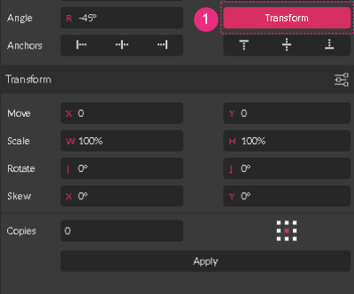
Structure
The structure of the Transform Panel is very straightforward – a pair of text fields opposite to each of the four types of transformations:

- Move – to move objects horizontally or vertically by a specified number of pixels relative to their current location
- Scale – to adjust the width and/or height of objects
- Rotate / Reflect – to rotate or reflect objects by a specified number of degrees
- Skew – to skew (shear) objects by a specified number of degrees
Basic Workflow
To transform an object you need to type a numerical value in any of these fields and click the button at the bottom of the panel.
In the example below I am rotating the square at an angle of 6° degrees.
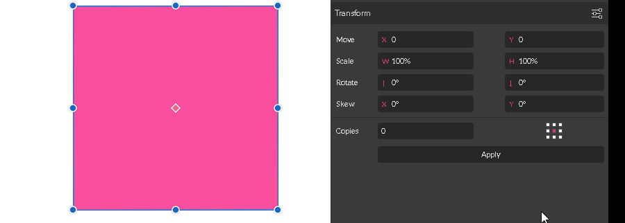
Moving Objects
Type a specific number in one of the Move fields:
Use the X field to move objects to the left (negative number) or right (positive number).
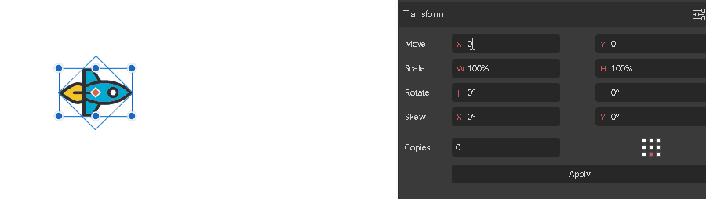
Use the Y field to move objects up and down. A positive value moves them down, a negative one moves them up.
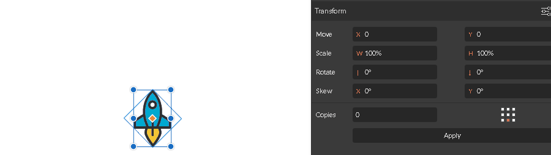
Scaling Objects
Scaling objects using the Transform Panel is a straightforward process:
- Select an object or a group of objects and bring up the Transform Panel
- Enter a new value in the width (W) or height (H) box, or both.
- Click the button.
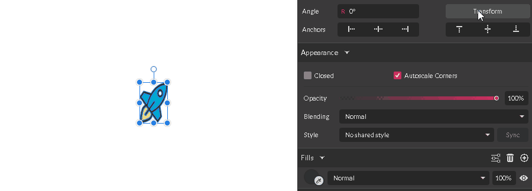
Note: you can input only relative values inside the scale boxes, so the end result would be rendered in percentages to the initial size. To work with actual size in pixels, please, use the Width and Height fields at the top of the Inspector Panel instead.
Rotating objects
You can rotate objects by a specific angle using the Transform Panel by following three simple steps:
- Select an object or a group of objects and bring up the Transform Panel
- Enter the rotation angle in the Rotate field.
- Enter a value inside the left text field to rotate.
- Use the right text field to set the angle of a reflect axis.
- Click Apply button to render the transformation
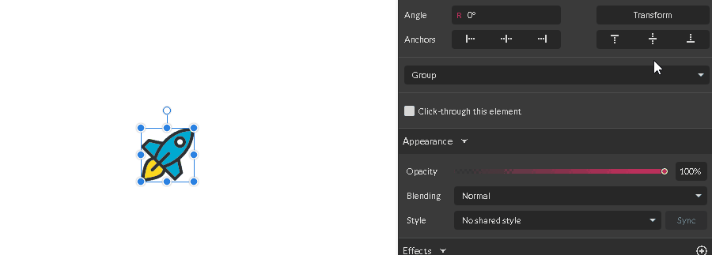
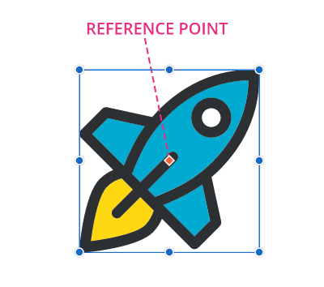
Skewing Objects
Use the Skew transformation to slant an object along one of the axes.
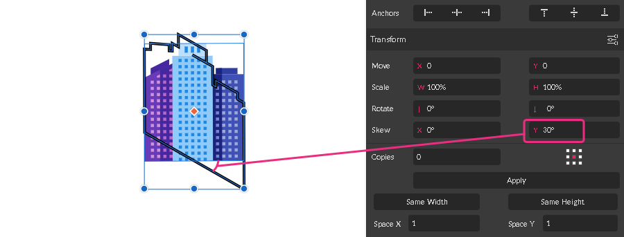
To skew (shear) objects by a specific number follow these steps:
- Select an object and bring up a Transform Panel
- Enter an angle value in the Skew text boxes:
- Use the left text box to skew along the horizontal axis
- Use the right text box to skew along the vertical axis
- Click Apply button to render the transformation
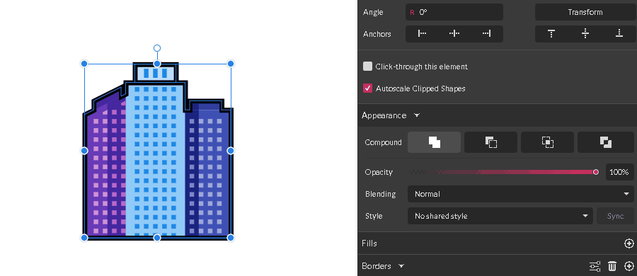
Transform and Copy Objects
Use the Copies text box to produce a number of copies at the end of your transformation.
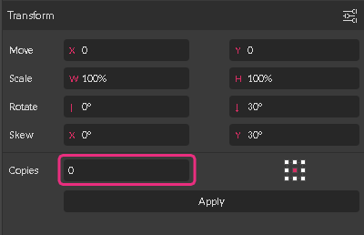
By default, the value of the Copies text field is 0. By typing a positive value inside this field you change the behavior of the transformation:
- The original object (1) wouldn’t be transformed at all, because the value of the transform property for the original one is 0.
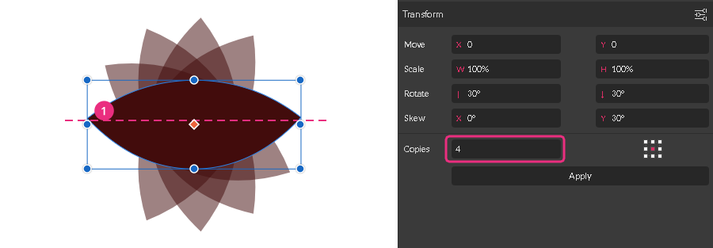
- The transformation would be sequential by nature, so the copies (2-5) would be produced one by one. Thus, the values for transform properties are calculated in relation to the previous copy, not to the original object.
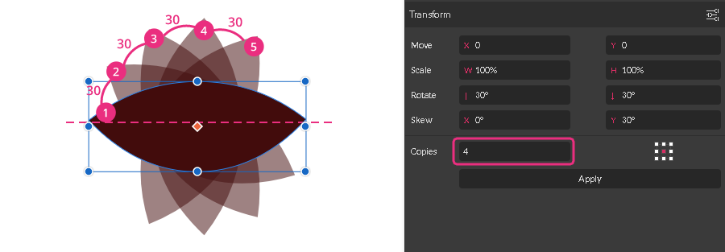
Let me explain these rules by example.
Let’s create 4 copies with a rotation angle of positive 300. Type 30 into the Rotate field (1) and 4 inside the Copies field (2). Click Apply button (3) to see the result.
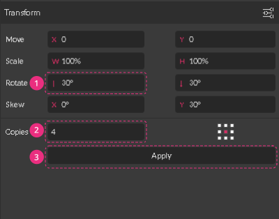
The angle value for the original object is 0. The angle value for Copy#1 is 300. The angle value for Copy#2 in relation to the Copy#1 is also 300, but it turns out to be 600 in relation to the original object. Therefore, Copy#3 has the angle value of 900 and Copy#4 has the angle value of 1200 if we are taking the original object as the reference.
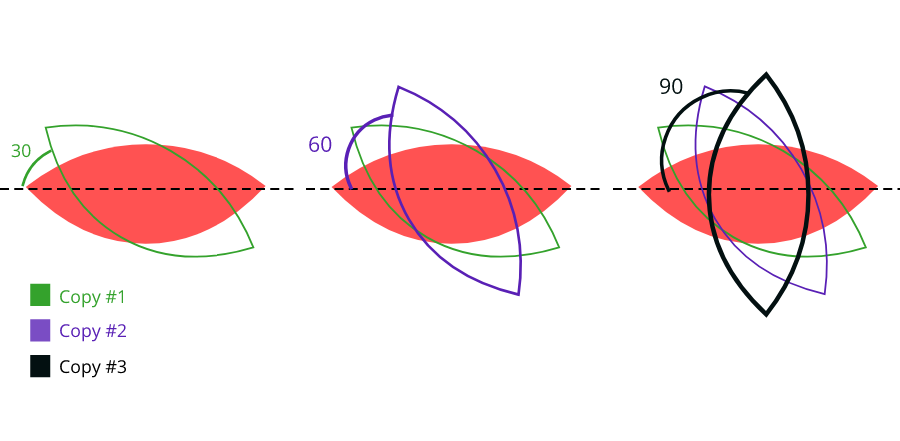
Reference Point
All transformations are carried out in relation to the Reference point, which specifies where the transformation should start. The reference point is sometimes referred to as the Transform origin point.
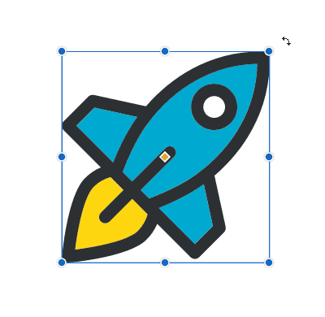
A reference point appears every time you bring up the Transform panel as a red ruby with a white outline.
By default, the Reference point is positioned in the center of an object.

To change its location manually follow these steps:
- Bring up the Transform panel to reveal the point
- Head over to the ruby point in the center of an object
- Hold the Left Mouse Button key and drag the point to the custom location
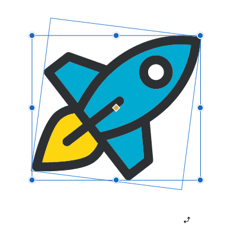
- Use the Pointer Tool to rotate the object around the custom reference point
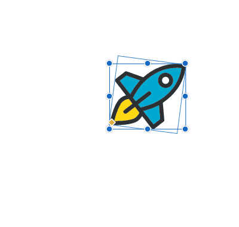
Duplicate around the custom Reference point
You can create duplicates around the custom reference point.
Select an object and head over to the Transform Panel to bring up the reference point.
Create a duplicate by going to or by using +
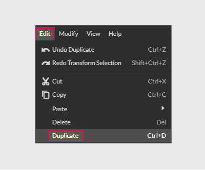
Shift the reference point the way you will. In the image below I pushed it out of the bounding box.
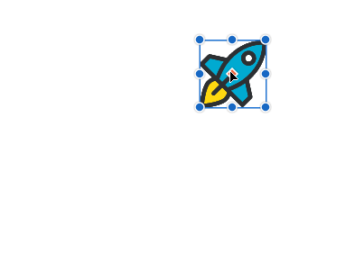
Drag a duplicate to rotate it. Release the when you are happy with the angle.
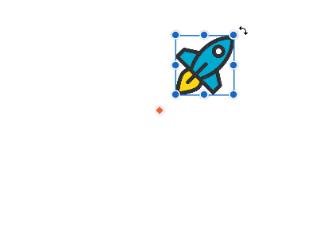
Repeat the transformation by going to or by using +.
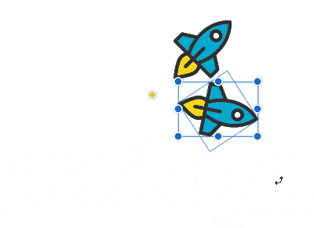
Watch the full video of the process below.
The Reference point map
Another way to change the location of the Reference point is to use the Reference point map (1) (called also 9 point proxy) in the bottom right of the Transform panel.
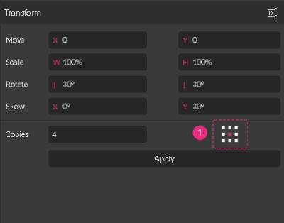
Reference point map (1) represents a bounding box (2) of an object, so each square in the map is analog to the transform handle in the bounding box.
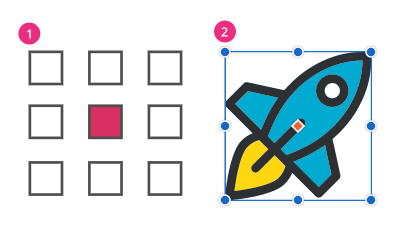
Each time you select one of the nine squares you move the reference point to one of the transform handles.
The reference point map works only within the Transform panel.
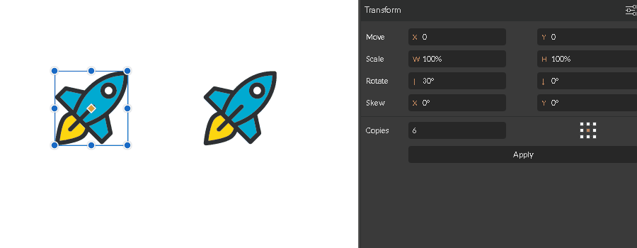
Autoscale Borders
Option “Autoscale Borders” (2) defines the border weight response when you size objects up and down. You can locate this option under the Advanced Settings (1) dropdown menu within the Transform panel.
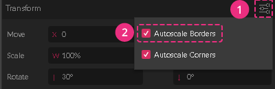
Enable Autoscale Borders to keep the border weight scaling with an object.
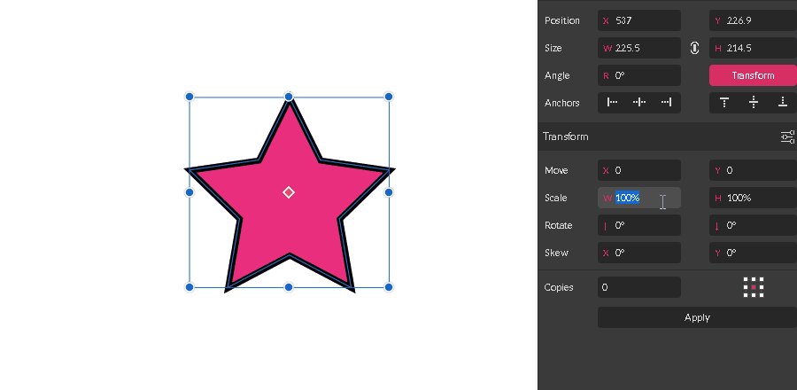
Disable Autoscale Borders to maintain the same value of the border weight regardless of the size of an object.
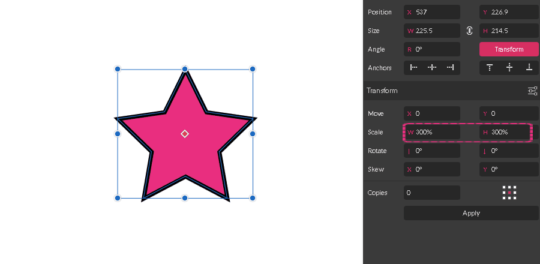
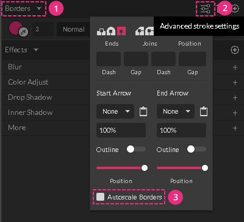
Autoscale Corner
Option “Autoscale Corners” (2) defines the corner radius response when you are sizing objects up and down. You can locate this option under the Advanced Settings (1) dropdown menu within the Transform panel.
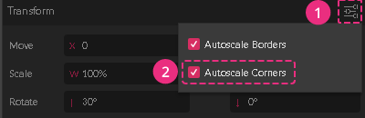
Enable Autoscale Borders to keep the corner radius scaling with an object.
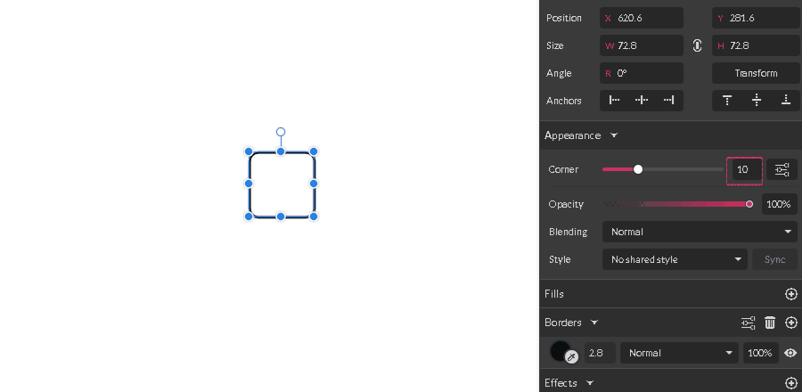
Disable Autoscale Borders to maintain the same value of the corner radius regardless of the size of an object.

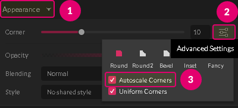